News
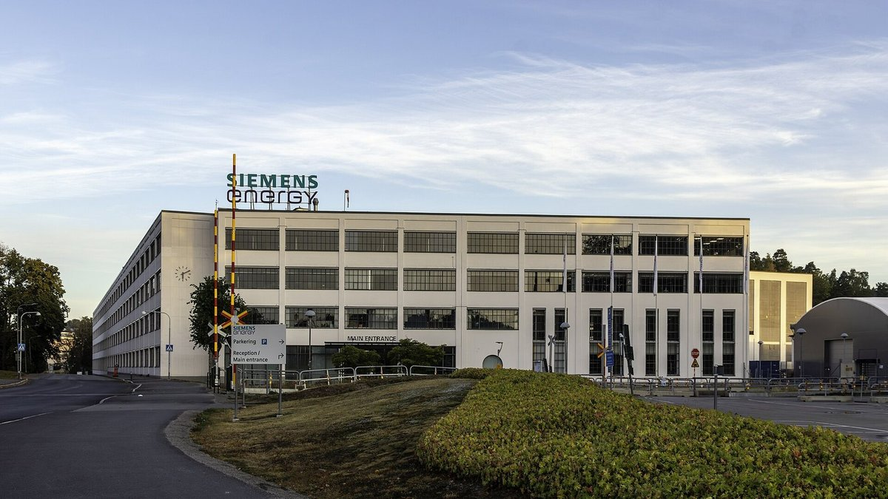
Thema des Tages Quartalszahlen · 11.11.2026, 07:50 Uhr
Siemens Energy verdreifacht den Quartalsgewinn und peilt für 2030 eine Marge von 20 bis 22 % an
Siemens Energy schließt das Geschäftsjahr 2025/26 mit Rekordumsatz im vierten Quartal ab: Der Gewinn vor Sondereffekten steigt auf 1,5 Milliarden Euro, die Dividende von 0,70 auf 2,30 Euro. Jede der vier Sparten hat einen eigenen Weg zu höheren Margen, die Windkraft schreibt erstmals schwarze Zahlen.
Artikel lesen →Kurzmeldungen
- Management · 11.11.2026, 03:21 UhrSymrise: Martin Huber folgt im April 2027 auf Finanzchef Olaf Klinger
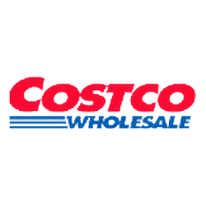
Dividende · 10.11.2026, 22:15 UhrCostco zahlt 30 US-Dollar Sonderdividende je Aktie und stockt Rückkauf auf 4 Milliarden auf- Dividende · 10.11.2026, 22:10 Uhr · Dividende erhöhtBroadridge Financial Solutions erhöht Quartalsdividende auf 1,09 US-Dollar je Aktie
- Geschäft · 10.11.2026, 17:16 UhrStellantis verkauft Montagewerk in Brampton und kooperiert mit Roshel
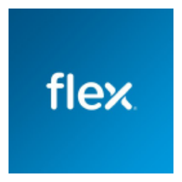
Ausblick · 10.11.2026, 17:16 UhrFlex Ltd. peilt für 2029 operative Marge von über 7 Prozent an- Übernahme · 10.11.2026, 17:16 UhrAlibaba strebt Börsengang der Tochtergesellschaft T-Head in Hongkong an
Weitere Kurzmeldungen
 Geschäft · 10.11.2026, 17:15 UhrFresenius Medical Care platziert 500 Millionen Euro schwere Anleihe
Geschäft · 10.11.2026, 17:15 UhrFresenius Medical Care platziert 500 Millionen Euro schwere Anleihe- Quartalszahlen · 10.11.2026, 17:13 UhrPorsche SE rutscht nach Millionen-Wertminderung tief in die roten Zahlen
- Sonstige Meldung · 10.11.2026, 14:20 UhrJohnson & Johnson: Zweite Phase-3-Studie zu Caplyta bei bipolarer Manie erreicht ihr Ziel, 43,9 % der Patienten sprechen an, unter Placebo 23,7 %
- Quartalszahlen · 10.11.2026, 14:15 UhrSony Group: Operatives Ergebnis klettert im Halbjahr auf 1,1 Mrd. Yen
- Aktienrückkauf · 10.11.2026, 14:15 UhrING Groep: Aktienrückkauf im Volumen von rund 108,9 Millionen Euro fortgeschritten
- Quartalszahlen · 10.11.2026, 14:09 UhrHonda Motor: Operativer Gewinn springt im ersten Halbjahr um 48,1 Prozent nach oben
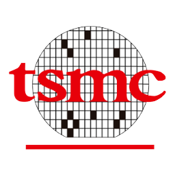
Geschäft · 10.11.2026, 14:07 UhrTaiwan Semiconductor Manufacturing Company: Oktober-Umsatz springt um 59,7 Prozent nach oben- Quartalszahlen · 10.11.2026, 14:07 UhrTransDigm Group: Gewinn je Aktie klettert im vierten Quartal um 33 Prozent
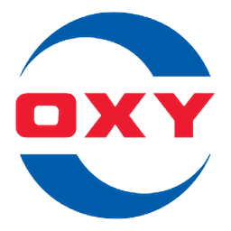
Quartalszahlen · 10.11.2026, 04:12 UhrOccidental Petroleum meldet im dritten Quartal bereinigten Gewinn von 1,91 US-Dollar je Aktie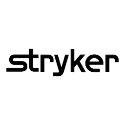
Management · 10.11.2026, 04:10 UhrStryker nominiert Quest-Diagnostics-Chef Jim Davis für den Verwaltungsrat- Sonstige Meldung · 09.11.2026, 22:05 UhrAmgens Repatha senkt bei Nierenkranken das Risiko für Herzinfarkt und Schlaganfall um 39 %
- Geschäft · 09.11.2026, 20:12 UhrHonda Motor investiert drei Milliarden US-Dollar in neues US-Werk
- Sonstige Meldung · 09.11.2026, 19:15 UhrMerck-Wirkstoff Efinopegdutid bringt bei bis zu 63 % der Leberpatienten die MASH-Entzündung zum Abklingen, Placebo 13 %
- Sonstige Meldung · 09.11.2026, 16:01 UhrAkamai Technologies plant Wandelanleihen-Emission über 2,2 Milliarden US-Dollar
- Übernahme · 07.11.2026, 01:24 Uhr · Übernahme oder UmbauFox Corporation schließt Roku-Übernahme ab und plant Synergien von 400 Mio. US-Dollar
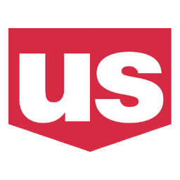
Quartalszahlen · 06.11.2026, 20:51 UhrU.S. Bancorp steigert Nettogewinn im dritten Quartal auf 2,1 Milliarden US-Dollar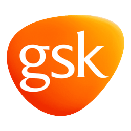
Dividende · 06.11.2026, 20:51 UhrGSK gibt provisorische Dividendentermine für das Jahr 2027 bekannt- Quartalszahlen · 06.11.2026, 20:51 UhrFranklin Resources: Nettogewinn steigt im vierten Quartal auf 380,1 Millionen US-Dollar
Weitere Artikel

Quartalszahlen · 11.11.2026, 10:15 Uhr
RWE verdient nach neun Monaten 43 % mehr und peilt für 2026 das obere Ende der Prognose an
RWE steigert das bereinigte Ergebnis nach neun Monaten kräftig, getragen von einem starken Energiehandel, mehr Wind und Sonne sowie besseren Windverhältnissen. Der Konzern hebt die Erwartung an und setzt auf Gaskraftwerke und Batterien.
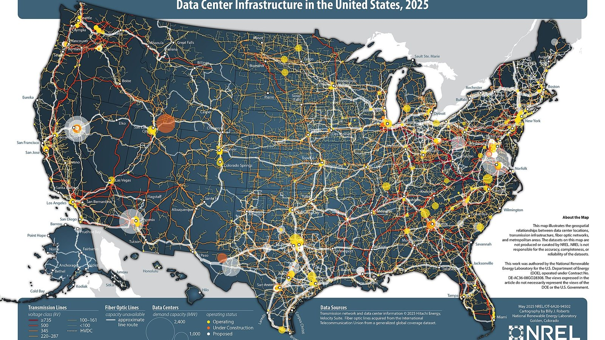
Quartalszahlen · 10.11.2026, 22:50 Uhr
CoreWeave: Umsatz +168 % auf 3,7 Mrd. US-Dollar, doch die Zinsen übersteigen das Betriebsergebnis um mehr als das Vierfache
CoreWeave wächst im dritten Quartal um 168 % auf 3,7 Milliarden US-Dollar, hebt die Jahresprognose an und füllt den Auftragsbestand auf 132,5 Milliarden. Der Nettoverlust steigt auf 709 Millionen, weil Zinsen und Investitionen mitwachsen.
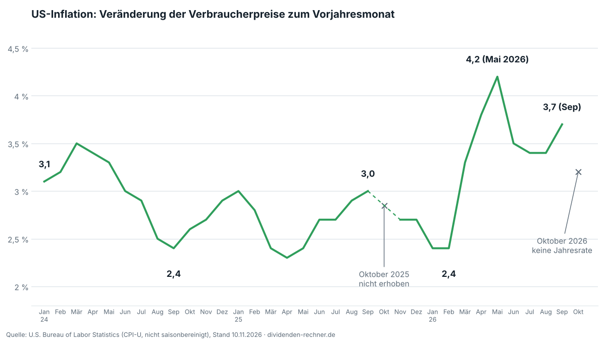
Analyse · 10.11.2026, 14:35 Uhr
US-Inflation: Jahresrate zuletzt 3,7 % nach 3,4 % im August, für den Oktober fehlt die Zahl, im Monat steigen die Preise um 0,4 %
Die Jahresinflation in den USA liegt im September bei 3,7 %, dem höchsten Wert seit Mai. Für den Oktober kann die Statistikbehörde wegen einer Datenlücke aus dem Jahr 2025 keine Jahresrate ausweisen, der Monatswert zeigt aber einen weiter hohen Preisdruck.

Analyse · 10.11.2026, 10:14 Uhr
+2,5 % nach Pentagon-Entscheidung: WuXi AppTec erholt sich von US-Schwarzer Liste
Die Aktie von WuXi AppTec legt nach der Streichung von der US-Militärliste zu. Ein juristischer Erfolg sorgt für Erleichterung an der Börse.

Analyse · 10.11.2026, 10:14 Uhr
SoftBank sagt 64,6 Mrd. USD für OpenAI zu: Beleihungsquote hält sich bei stabilen 20,6 %
SoftBank baut seine KI-Offensive mit Milliarden-Zusagen an OpenAI und Expansionsplänen in Malaysia weiter aus, während der Markt Risiken abwägt.

Analyse · 10.11.2026, 10:14 Uhr
DBS blickt auf KI-Finanzierungsboom: Soitec-Aktie steigt im Jahr 2026 um 570 %
Singapurer Banken wie DBS sehen eine hohe Nachfrage nach KI-Finanzierungen, achten aber strikt auf Schuldenrisiken. Während KI-Aktien wie Soitec um 570 % zulegen, priorisieren Geldgeber verlässliche Cashflows.

Quartalszahlen · 10.11.2026, 09:15 Uhr
Vodafone: Abschreibung auf Deutschland führt zum Milliardenverlust, das operative Ergebnis wächst um 6,4 %
Vodafone verbucht im Halbjahr 4,9 Mrd. Euro Abschreibung auf das Deutschlandgeschäft und 2,2 Mrd. Euro Steuereffekt in Großbritannien und rutscht in die Verlustzone. Das operative Geschäft läuft besser: Afrika wächst zweistellig, die Prognose steigt, die Zwischendividende um 2,5 %.

Quartalszahlen · 10.11.2026, 08:40 Uhr
Infineon: Das Schlussquartal bringt 56 % mehr Segmentergebnis, 2027 soll der Umsatz um ein Fünftel steigen
Infineon schließt das Geschäftsjahr mit einem Rekordquartal ab, getragen von Stromversorgungen für KI-Rechenzentren. Für 2027 stellt der Konzern rund 20 Mrd. Euro Umsatz in Aussicht, die Dividende steigt auf 0,38 Euro. Bremsen bleiben die hohen Investitionen, die Nettoschulden und das Geschäft mit Edge-KI-Chips.
Älter
- Analyse · 09.11.2026, 22:45 UhrJapan Tobacco verliert sein Russland-Geschäft: Die Aktie fällt in zwei Tagen um ein Drittel
- Analyse · 09.11.2026, 22:15 UhrBrent verliert binnen zehn Tagen mehr als ein Fünftel: Was das für Exxon, Shell und BP heißt
 Analyse · 09.11.2026, 14:05 UhrNvidia fällt um 7 %, während Google und AMD mit neuen KI-Chips angreifen
Analyse · 09.11.2026, 14:05 UhrNvidia fällt um 7 %, während Google und AMD mit neuen KI-Chips angreifen- Management · 09.11.2026, 13:10 UhrNvidia fällt um 6 %, nachdem Chef Huang eine Affäre einräumt und der Verwaltungsrat ermittelt
- Quartalszahlen · 09.11.2026, 12:15 UhrBarrick: Bereinigter Gewinn je Aktie steigt um 41 %, die Kosten je Unze um ein Viertel
- Analyse · 09.11.2026, 10:05 UhrUniCredit will die Commerzbank früher mit der HVB zusammenlegen, Aktionäre müssen mit weniger Dividende rechnen
 Quartalszahlen · 09.11.2026, 08:00 UhrHannover Rück steigert den Gewinn um 7 %, Großschäden bleiben deutlich unter Plan
Quartalszahlen · 09.11.2026, 08:00 UhrHannover Rück steigert den Gewinn um 7 %, Großschäden bleiben deutlich unter Plan Quartalszahlen · 09.11.2026, 00:30 UhrMain Street Capital: Gewinn je Aktie sinkt um 8 %, der Substanzwert wächst zum 17. Mal in Folge
Quartalszahlen · 09.11.2026, 00:30 UhrMain Street Capital: Gewinn je Aktie sinkt um 8 %, der Substanzwert wächst zum 17. Mal in Folge- Analyse · 08.11.2026, 20:15 UhrEcolab wächst zweistellig, doch der Gewinn je Aktie sinkt: Warum das gute Geschäft für Dividendenjäger schwierig ist
- Analyse · 08.11.2026, 09:15 UhrBerkshire Hathaway: Der Gewinn bricht ein, doch die Betriebe verdienen mehr
- Analyse · 07.11.2026, 10:15 UhrWochenausblick: Die Zinserhöhung rückt näher, dazu Inflationszahlen und Zahlen von Siemens, Allianz und Cisco
- Analyse · 07.11.2026, 10:00 UhrAnleihen 2026: Warum die UBS Qualitätsanleihen trotz Zinsschwankungen für attraktiv hält
- Analyse · 07.11.2026, 09:54 UhrUnilever wird reiner Pflegekonzern: Dividende, Rückkauf und ein Umbau mit offenen Fragen
- Analyse · 07.11.2026, 09:37 UhrWochenbilanz: Schwächste Börsenwoche seit Juni, warum der KI-Trade wackelt und was dagegen spricht
 Quartalszahlen · 06.11.2026, 13:25 UhrEnbridge: Bereinigtes EBITDA steigt im dritten Quartal um 4 % auf Rekord von 4,4 Mrd. C$, Prognose bestätigt, Konzernchef Ebel geht Ende 2026
Quartalszahlen · 06.11.2026, 13:25 UhrEnbridge: Bereinigtes EBITDA steigt im dritten Quartal um 4 % auf Rekord von 4,4 Mrd. C$, Prognose bestätigt, Konzernchef Ebel geht Ende 2026 Quartalszahlen · 06.11.2026, 13:20 Uhr · Prognose angehobenOCBC: Gewinn steigt im dritten Quartal um 3 % auf 2,0 Mrd. S$, Bankgeschäft auf Rekord, Prognose angehoben
Quartalszahlen · 06.11.2026, 13:20 Uhr · Prognose angehobenOCBC: Gewinn steigt im dritten Quartal um 3 % auf 2,0 Mrd. S$, Bankgeschäft auf Rekord, Prognose angehoben Quartalszahlen · 06.11.2026, 11:30 UhrMP Materials: Umsatz fast verdreifacht, Verlust halbiert – Neodym-Förderer wird im dritten Quartal bereinigt profitabel
Quartalszahlen · 06.11.2026, 11:30 UhrMP Materials: Umsatz fast verdreifacht, Verlust halbiert – Neodym-Förderer wird im dritten Quartal bereinigt profitabel Quartalszahlen · 06.11.2026, 10:30 UhrMitsubishi Heavy: Gasturbinen und Kernkraft treiben den Halbjahresgewinn um 45 %, Prognose und Rückkauf folgen
Quartalszahlen · 06.11.2026, 10:30 UhrMitsubishi Heavy: Gasturbinen und Kernkraft treiben den Halbjahresgewinn um 45 %, Prognose und Rückkauf folgen- Quartalszahlen · 05.11.2026, 22:20 UhrSouthern Company: Starkes Stromgeschäft und Wärme treiben Gewinn im dritten Quartal
- Übernahme · 05.11.2026, 15:50 UhrUnion Pacific −1,5 %, Norfolk Southern −1 %: Bahnaufsicht gibt Rede von Konzernchef Vena frei
 Quartalszahlen · 05.11.2026, 12:30 Uhr · Übernahme oder UmbauKimberly-Clark: Bereinigtes EPS +17 %, aber organischer Umsatz −1,3 % – China-Schwäche belastet, Kenvue-Übernahme abgeschlossen
Quartalszahlen · 05.11.2026, 12:30 Uhr · Übernahme oder UmbauKimberly-Clark: Bereinigtes EPS +17 %, aber organischer Umsatz −1,3 % – China-Schwäche belastet, Kenvue-Übernahme abgeschlossen Quartalszahlen · 05.11.2026, 11:25 Uhr · Prognose angehobenToyota: Operativer Gewinn +34 % dank Hybriden und schwachem Yen – Jahresziel um 15 % angehoben
Quartalszahlen · 05.11.2026, 11:25 Uhr · Prognose angehobenToyota: Operativer Gewinn +34 % dank Hybriden und schwachem Yen – Jahresziel um 15 % angehoben Quartalszahlen · 05.11.2026, 08:00 UhrDiageo: Organischer Umsatz +1,4 % im ersten Quartal – Nordamerika schrumpft nur noch um 3,6 %, Prognose bestätigt
Quartalszahlen · 05.11.2026, 08:00 UhrDiageo: Organischer Umsatz +1,4 % im ersten Quartal – Nordamerika schrumpft nur noch um 3,6 %, Prognose bestätigt- Quartalszahlen · 05.11.2026, 07:25 Uhr · Dividende erhöhtDeutsche Telekom: Umsatz +7,5 % auf 31,1 Mrd. Euro, Prognose leicht erhöht – 1,10 Euro Dividende vorgeschlagen
- Unternehmensmeldungen · 05.11.2026, 07:15 UhrSiemens Healthineers gliedert Diagnostik als „Olyrian Diagnostics“ aus und benennt sich in „Healthineers“ um
- Quartalszahlen · 05.11.2026, 07:05 UhrDBS: Nettogewinn sinkt im dritten Quartal um 5 % auf 2,8 Mrd. SGD – Dividende von 81 Cent je Aktie
- Quartalszahlen · 04.11.2026, 15:10 Uhr · Dividende erhöhtMcDonald's: Gewinn +9 %, aber US-Vergleichsumsatz −0,2 % – Dividende um 4 % erhöht
- Analyse · 04.11.2026, 14:50 UhrCVS Health: Starke Zahlen, höhere Prognose, und plötzlich soll der Konzern geteilt werden
 Quartalszahlen · 04.11.2026, 13:42 Uhr · Prognose angehobenKraft Heinz: Umsatz −2 % auf 6,1 Mrd. USD, Gewinn −13 % – Prognose leicht angehoben
Quartalszahlen · 04.11.2026, 13:42 Uhr · Prognose angehobenKraft Heinz: Umsatz −2 % auf 6,1 Mrd. USD, Gewinn −13 % – Prognose leicht angehoben- Ausblick · 04.11.2026, 10:15 UhrUnilever wird reiner Pflegekonzern: 1 Mrd. Euro Einsparungen bis 2029, 4 bis 6 % Umsatzwachstum als Ziel
 Quartalszahlen · 04.11.2026, 09:20 Uhr · Prognose angehobenNovo Nordisk hebt Prognose an: bereinigter Betriebsgewinn im Quartal +27 %, Wegovy-Pille bringt 5,4 Mrd. DKK
Quartalszahlen · 04.11.2026, 09:20 Uhr · Prognose angehobenNovo Nordisk hebt Prognose an: bereinigter Betriebsgewinn im Quartal +27 %, Wegovy-Pille bringt 5,4 Mrd. DKK Quartalszahlen · 04.11.2026, 07:50 Uhr · Prognose angehobenFresenius hebt Gewinnziel an: Kern-Ergebnis je Aktie +14 %, Helios-EBIT +21 %
Quartalszahlen · 04.11.2026, 07:50 Uhr · Prognose angehobenFresenius hebt Gewinnziel an: Kern-Ergebnis je Aktie +14 %, Helios-EBIT +21 %- Quartalszahlen · 03.11.2026, 22:20 UhrAMD: Umsatz +45 %, Rechenzentrum fast verdoppelt, Aktie nachbörslich +7 %
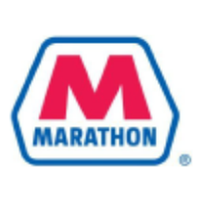
Quartalszahlen · 03.11.2026, 18:05 UhrMarathon Petroleum: Ergebnis mehr als verdreifacht, Raffineriemargen treiben das Quartal Quartalszahlen · 03.11.2026, 13:23 UhrPfizer: Umsatz stagniert bei 16,6 Mrd. USD, während angepasste R&D-Ausgaben das Ergebnis belasten
Quartalszahlen · 03.11.2026, 13:23 UhrPfizer: Umsatz stagniert bei 16,6 Mrd. USD, während angepasste R&D-Ausgaben das Ergebnis belasten- Fusion & Übernahme · 03.11.2026, 10:10 Uhr · Übernahme oder UmbauLonza übernimmt US-CDMO-Netzwerk von Merck KGaA für hunderte Millionen Franken
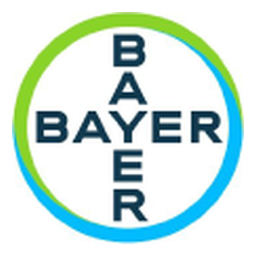
Quartalszahlen · 03.11.2026, 10:03 UhrBayer: Pharmaceuticals zieht an, während Nettoverlust und Glyphosat-Prozesse belasten- Quartalszahlen · 03.11.2026, 00:25 UhrRealty Income wächst weiter: Mieteinnahmen steigen im dritten Quartal kräftig an
 Jahresbericht · 02.11.2026, 22:33 UhrApple wächst zweistellig: iPhone und Services treiben Rekordgewinn
Jahresbericht · 02.11.2026, 22:33 UhrApple wächst zweistellig: iPhone und Services treiben Rekordgewinn Quartalszahlen · 02.11.2026, 22:30 UhrPalantir: Umsatz steigt im dritten Quartal um 96 Prozent, Unternehmenskunden überholen in den USA erstmals den Staat
Quartalszahlen · 02.11.2026, 22:30 UhrPalantir: Umsatz steigt im dritten Quartal um 96 Prozent, Unternehmenskunden überholen in den USA erstmals den Staat- Quartalszahlen · 02.11.2026, 22:21 UhrCRISPR Therapeutics: Casgevy-Umsatz steigt auf 99 Millionen US-Dollar, der Verlust bleibt
 Quartalszahlen · 02.11.2026, 22:20 Uhr · Prognose angehobenVertex hebt die Jahresprognose an: Casgevy und Journavx legen zu, die Übernahme drückt den Gewinn
Quartalszahlen · 02.11.2026, 22:20 Uhr · Prognose angehobenVertex hebt die Jahresprognose an: Casgevy und Journavx legen zu, die Übernahme drückt den Gewinn Analyse · 02.11.2026, 20:30 UhrPernod Ricard: Free Cashflow steigt, die Dividende bleibt knapp gedeckt
Analyse · 02.11.2026, 20:30 UhrPernod Ricard: Free Cashflow steigt, die Dividende bleibt knapp gedeckt- Fusion & Übernahme · 02.11.2026, 17:17 UhrMarvell schluckt Lumentum für 115 Mrd. USD: All-Stock-Deal bringt 23,9 % Aufschlag
- Sonstige Meldung · 02.11.2026, 15:34 UhrBerenberg-Marktmonitor: Tech-Skepsis, US-Wahlen und Zinswende belasten die Märkte
- Sonstige Meldung · 01.11.2026, 22:03 UhrAbbott: 97 % Verfahrenserfolg in Zulassungsstudie für SonicForce-System
- Analyse · 01.11.2026, 13:09 UhrDie Chiphersteller finanzieren ihre Kunden: Stärke und Risiko des KI-Netzes
- Analyse · 31.10.2026, 15:40 UhrBig Oil verdient am Krieg, tilgt aber zuerst Schulden
- Analyse · 30.10.2026, 21:45 UhrIntel implodiert, Amazon und Co. enttäuschen den Markt
- Quartalszahlen · 30.10.2026, 18:20 Uhr · Prognose angehobenSanofi wächst im dritten Quartal kräftig und hebt Jahresprognose an
- Quartalszahlen · 30.10.2026, 18:02 UhrAbbVie wächst - Skyrizi und Rinvoq machen Humira vergessen
- Quartalszahlen · 30.10.2026, 12:30 UhrChevron meldet 9,9 Milliarden Dollar Gewinn im dritten Quartal
- Quartalszahlen · 30.10.2026, 12:23 UhrExxonMobil erzielt im dritten Quartal 15,4 Milliarden US-Dollar Nettogewinn
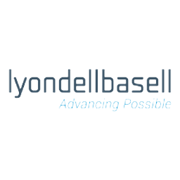
Quartalszahlen · 30.10.2026, 11:43 UhrLyondellBasell verdient im Quartal 758 Millionen US-Dollar- Quartalszahlen · 30.10.2026, 10:02 UhrBP senkt Finanzverbindlichkeiten und steigert bereinigten Gewinn deutlich
 Jahresbericht · 29.10.2026, 23:52 UhrStarbucks steigert Umsatz im Geschäftsjahr 2026 auf 37,9 Milliarden Dollar
Jahresbericht · 29.10.2026, 23:52 UhrStarbucks steigert Umsatz im Geschäftsjahr 2026 auf 37,9 Milliarden Dollar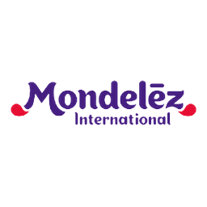
Quartalszahlen · 29.10.2026, 23:46 UhrMondelēz steigert Umsatz und Nettogewinn im dritten Quartal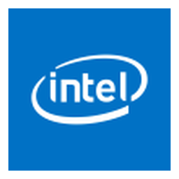
Quartalszahlen · 29.10.2026, 21:59 UhrIntel steigert den Umsatz - Kurs bricht aber ein- Quartalszahlen · 29.10.2026, 14:54 UhrAltria steigert bereinigten Gewinn je Aktie im dritten Quartal
- Quartalszahlen · 29.10.2026, 09:26 UhrMicrosoft steigert Umsatz im ersten Quartal auf 92,3 Milliarden US-Dollar
- Quartalszahlen · 29.10.2026, 09:15 UhrAlphabets Rekordumsatz trifft auf Milliardeninvestitionen in KI
- Halbjahreszahlen · 29.10.2026, 08:22 Uhr · Prognose angehobenKomatsu hebt Jahresprognose nach Umsatzplus im Halbjahr an
- Sonstige Meldung · 28.10.2026, 19:15 UhrFed belässt Leitzins im Oktober 2026 bei 3,75 bis 4 Prozent
- Quartalszahlen · 28.10.2026, 15:47 Uhr · Prognose angehobenUnilever steigert Umsatz auf 13,3 Milliarden Euro und hebt Ausblick an
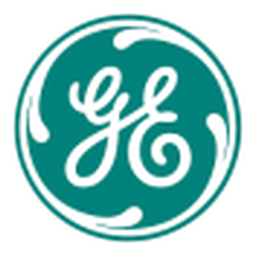
Quartalszahlen · 28.10.2026, 15:33 UhrGE Vernova steigert Quartalsumsatz auf 12,6 Milliarden US-Dollar- Quartalszahlen · 28.10.2026, 15:18 UhrPing An steigert operatives Ergebnis auf 125,9 Milliarden RMB
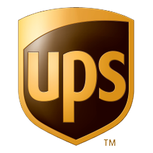
Quartalszahlen · 27.10.2026, 20:20 UhrUPS setzt 22,9 Milliarden um, Sondereffekte drücken das Ergebnis- Quartalszahlen · 27.10.2026, 13:23 UhrBoeing setzt 24,2 Milliarden um und bleibt operativ im Minus
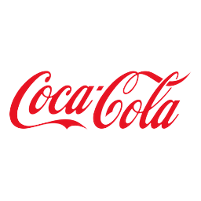
Quartalszahlen · 27.10.2026, 12:58 UhrCoca-Cola verdient mehr: Umsatz und Konzernergebnis steigen- Sonstige Meldung · 27.10.2026, 11:50 Uhr · Prognose gesenktMercedes-Benz senkt Ausblick für 2026 wegen China und Kosten
- Quartalszahlen · 27.10.2026, 10:13 UhrHSBC verdient 9,6 Milliarden vor Steuern und kauft Aktien zurück
- Quartalszahlen · 27.10.2026, 09:40 Uhr · Prognose angehobenNovartis erhöht die Gewinnprognose, neue Medikamente laufen gut
- Zahlen · 26.10.2026, 22:28 Uhr · Prognose angehobenVerizon steigert bereinigtes EPS und hebt Jahresziele für 2026 an
- Zahlen · 26.10.2026, 21:48 UhrCoca-Cola hebt die Ziele für Cashflow und Gewinn je Aktie an
Hinweis: Dieser Text dient der allgemeinen Information und ist weder Anlage-, Steuer- noch Rechtsberatung. Kapitalanlagen sind mit Risiken verbunden, bis hin zum Totalverlust.